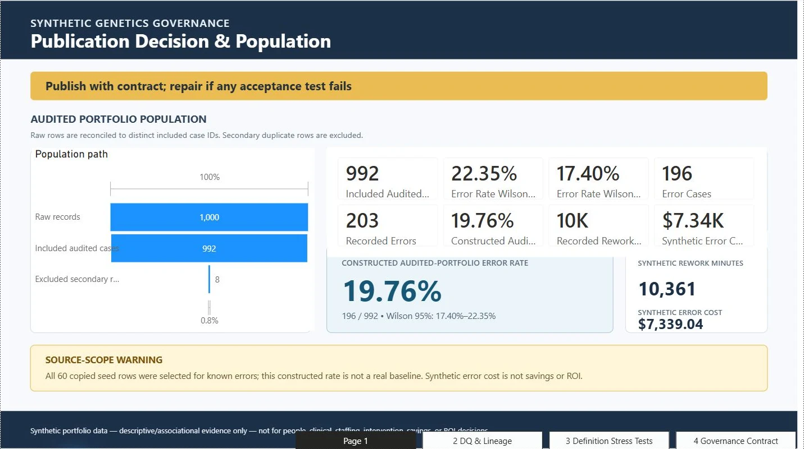
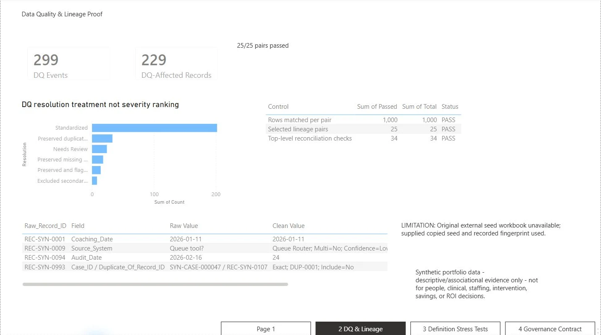
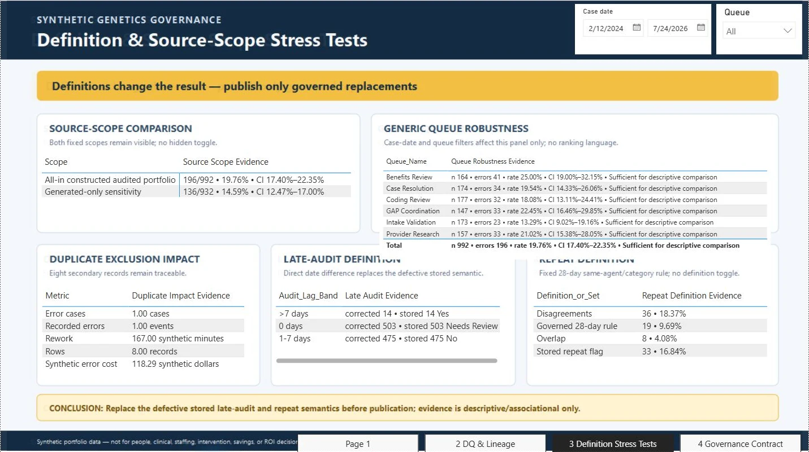
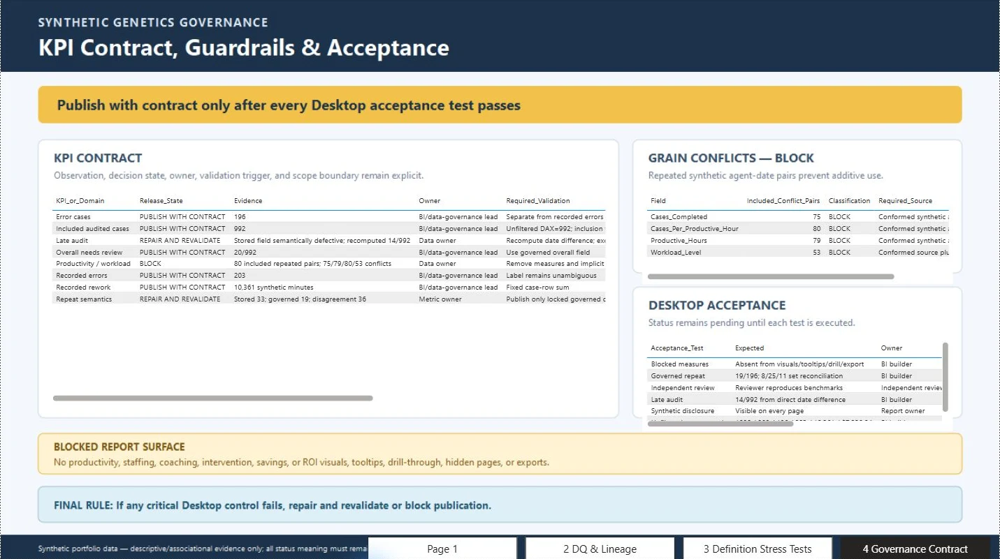

Visible report evidence
Page hierarchy, governance framing, data-quality traceability, definition stress tests, and release-state controls are visible in the reviewed views.
Case Study 02 · Self-directed portfolio project
A completed Power BI report focused on governance reporting and data storytelling, presented through four verified static report views.
Self-directed Power BI portfolio project built with synthetic genetics data to demonstrate governance reporting and data storytelling.
Verified report views
These four reviewed pages show how the report frames population scope, data quality, definition stress tests, and KPI acceptance gates. The figures are presentation evidence that establish a baseline.

The opening page turns a synthetic portfolio into a governed publication decision, reconciling 1,000 raw rows to 992 included cases and pairing the constructed rate with explicit source-scope limits.
Visible facts: The page shows 1,000 raw records, 992 included audited cases, 8 excluded secondary records and a constructed 19.76% rate.

Resolution treatments, passed reconciliation controls, and raw-to-clean lineage examples make the report's data-quality handling traceable while preserving a clear source limitation.
Visible facts: The page displays 299 data-quality events, 229 affected records, 25 of 25 selected lineage pairs passed, 1,000 of 1,000 matched rows, and 34 of 34 top-level reconciliation checks passed.

Stress tests show how source scope and governed definitions materially change descriptive results, supporting repair of defective late-audit and repeat semantics before publication.
Visible facts: The page compares all-in constructed scope with generated-only sensitivity, shows queue robustness and duplicate impact, and includes visible Case-date and Queue slicers whose behavior was not tested.

A KPI contract assigns release states, owners, validation requirements, grain-conflict blocks, and Desktop acceptance gates before publication.
Visible facts: The page shows publish, repair, and block states; grain-conflict blockers; Desktop acceptance checks; and a final rule requiring repair/revalidation or blocked publication when a critical control fails.
What this demonstrates
Page hierarchy, governance framing, data-quality traceability, definition stress tests, and release-state controls are visible in the reviewed views.
The report makes source scope, definitions, reconciliation, and acceptance conditions explicit before publication.
Continue exploring